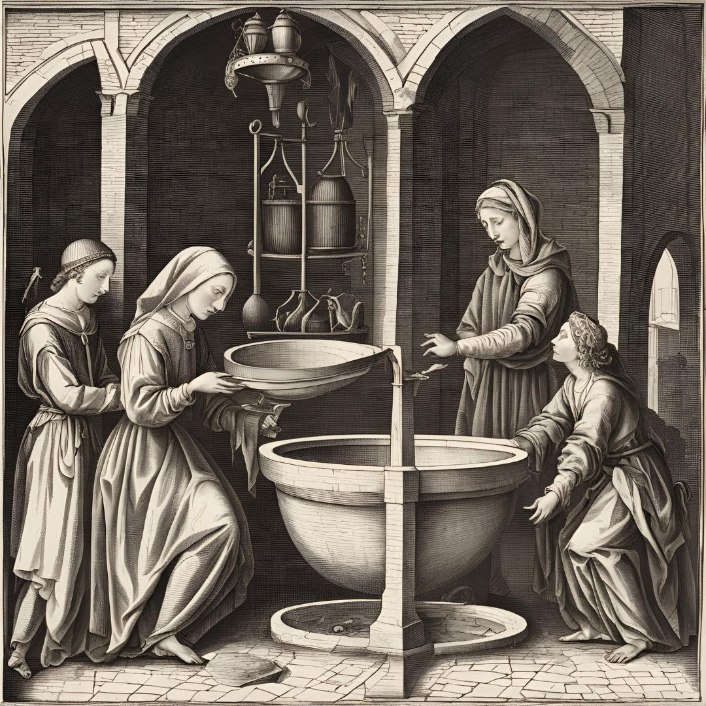

Sobre a Lavagem Facial na Idade Média
Na Idade Média, a prática de cuidados com a pele e lavagem facial era bem diferente dos métodos modernos. As pessoas frequentemente usavam uma combinação de ingredientes naturais para limpar o rosto. Entre os produtos utilizados estavam ervas, óleos e, surpreendentemente, urina.
A urina era valorizada devido ao seu conteúdo de amônia, que possui propriedades de limpeza e desinfecção. Era frequentemente coletada e utilizada como um tônico facial para ajudar a clarear a pele e tratar problemas de acne. Apesar de parecer estranho hoje, essa prática era comum e considerada eficaz na época.
Imagens da Lavagem Facial na Idade Média
